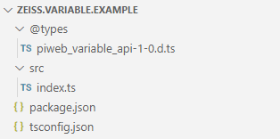
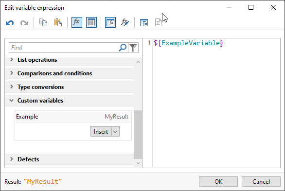

PiWeb Variable Extension
Quickstart
In order to create your first own variable extension, you should be familiar with JavaScript and Json. As JavaScript is untyped, we suggest you to develop your extension using TypeScript.
PiWeb searches for extensions in several locations. Ordered by their priority, these are:
- In the application data directory
%APPDATA%\Zeiss\PiWeb\Extensions - In the program data directory
%PROGRAMDATA%\Zeiss\PiWeb\Extensions - The
Extensionsfolder in the PiWeb installation directory
The package structure looks like the following:
Hint: You can download the result of the quickstart guide here.
1. Create the folder MyExtension
In case the Extensions folder doesn't exist, you must create it first. Place it in one of the folders listed above. Now create your project folder in the extensions folder and name it MyExtension.
2. Create the file package.json
The package configuration contains static parameters of your extension. A complete reference of the options can be found in the chapter package. For now, use the minimum setup shown below.
{
"name": "zeiss.variable.example",
"version": "1.0.0",
"main": "lib",
"engines": {
"piweb": "^1.0"
},
"piweb_actions": {
"load": "compile_typescript"
},
"piweb_extension": {
"type": "variable",
"variables": {
"ExampleVariable":{
"title" : "Example",
}
}
}
}3. Create the file tsconfic.json
It contains necessary information for the typescript compiler, like input and output directories and compiler switches. Just copy the code below and you'll be fine.
{
"compilerOptions": {
"target": "es6",
"strictNullChecks": true,
"module": "commonjs",
"sourceMap": false,
"moduleResolution": "node",
"noImplicitAny": true,
"outDir" : "lib",
"rootDir" : "src",
"typeRoots": ["./@types"]
}
}4. Create the folder @types and copy the file piweb_variable_api-1-0.d.ts into it
These are the type definitions of the PiWeb plot extension interface. It will enable productivity features like syntax highlighting and auto completion in your IDE. You can find this file here. The folder @types was defined as the type root in the tsconfig.json file.
5. Create the folder src and create the file index.ts in it
This is where your variable is actually calculated. In the example below, we simply return the fixed string MyResult. Many interfaces of PiWeb are available to the variables.
import * as piweb from 'piweb'
piweb.events.on("calculate", calculate);
function calculate() : piweb.expressions.ExpressionDataType {
return "MyResult";
}When we save all files and start PiWeb Designer, we should find our extension in the User defined category of the variable editor:
For a complete reference, please have a look at the Index.